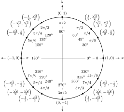

Skip to main content
Contents Index
Search Book
Search Results:
No results.
Calculator
Read aloud Readability settings Prev Up Next \(\require{cancel}\newcommand\blank[2]{\,\colorbox{gray}{$\phantom{\rule{#1pt}{#2pt}}$}\,}
\newcommand{\highlight}[1]{{\color{blue}{#1}}}
\newcommand{\ds}{\displaystyle}
\newcommand{\fp}{f\hskip.75pt '}
\newcommand{\fpp}{f\hskip.75pt ''}
\newcommand{\lz}[2]{\frac{d#1}{d#2}}
\newcommand{\lzn}[3]{\frac{d^{#1}#2}{d#3^{#1}}}
\newcommand{\lzo}[1]{\frac{d}{d#1}}
\newcommand{\lzoo}[2]{{\frac{d}{d#1}}{\left(#2\right)}}
\newcommand{\lzon}[2]{\frac{d^{#1}}{d#2^{#1}}}
\newcommand{\lzoa}[3]{\left.{\frac{d#1}{d#2}}\right|_{#3}}
\newcommand{\plz}[2]{\frac{\partial#1}{\partial#2}}
\newcommand{\plzoa}[3]{\left.{\frac{\partial#1}{\partial#2}}\right|_{#3}}
\newcommand{\inflim}[1][n]{\lim\limits_{#1 \to \infty}}
\newcommand{\primeskip}{\hskip.75pt }
\newcommand{\infser}[1][1]{\sum_{n=#1}^\infty}
\newcommand{\Fp}{F\hskip.75pt '}
\newcommand{\Fpp}{F\hskip.75pt ''}
\newcommand{\yp}{y\hskip.75pt '}
\newcommand{\gp}{g\hskip.75pt '}
\newcommand{\dx}{\Delta x}
\newcommand{\dy}{\Delta y}
\newcommand{\ddz}{\Delta z}
\newcommand{\thet}{\theta}
\newcommand{\norm}[1]{\left\lVert#1\right\rVert}
\newcommand{\vnorm}[1]{\left\lVert\vec #1\right\rVert}
\newcommand{\snorm}[1]{\left|\left|\,#1\,\right|\right|}
\newcommand{\la}{\left\langle}
\newcommand{\ra}{\right\rangle}
\newcommand{\dotp}[2]{\vec #1 \cdot \vec #2}
\newcommand{\proj}[2]{\text{proj}_{\,\vec #2}{\,\vec #1}}
\newcommand{\crossp}[2]{\vec #1 \times \vec #2}
\newcommand{\veci}{\vec i}
\newcommand{\vecj}{\vec j}
\newcommand{\veck}{\vec k}
\newcommand{\vecu}{\vec u}
\newcommand{\vecv}{\vec v}
\newcommand{\vecw}{\vec w}
\newcommand{\vecx}{\vec x}
\newcommand{\vecy}{\vec y}
\newcommand{\vrp}{\vec r\hskip0.75pt '}
\newcommand{\vrpp}{\vec r\hskip0.75pt ''}
\newcommand{\vsp}{\vec s\hskip0.75pt '}
\newcommand{\vrt}{\vec r(t)}
\newcommand{\vst}{\vec s(t)}
\newcommand{\vvt}{\vec v(t)}
\newcommand{\vat}{\vec a(t)}
\newcommand{\px}{\partial x}
\newcommand{\py}{\partial y}
\newcommand{\pz}{\partial z}
\newcommand{\pf}{\partial f}
\newcommand{\unittangent}{\vec{{}T}}
\newcommand{\unitnormal}{\vec{N}}
\newcommand{\unittangentprime}{\vec{{}T}\hskip0.75pt '}
\newcommand{\R}{mathbb{R}}
\newcommand{\mathN}{\mathbb{N}}
\newcommand{\surfaceS}{\mathcal{S}}
\newcommand{\zerooverzero}{\displaystyle \raisebox{8pt}{\text{``\ }}\frac{0}{0}\raisebox{8pt}{\textit{ ''}}}
\newcommand{\abs}[1]{\left\lvert #1\right\rvert}
\newcommand{\sech}{\operatorname{sech}}
\newcommand{\csch}{\operatorname{csch}}
\newcommand{\curl}{\operatorname{curl}}
\newcommand{\divv}{\operatorname{div}}
\newcommand{\Hess}{\operatorname{Hess}}
\newcommand{\lt}{<}
\newcommand{\gt}{>}
\newcommand{\amp}{&}
\newcommand{\fillinmath}[1]{\mathchoice{\underline{\displaystyle \phantom{\ \,#1\ \,}}}{\underline{\textstyle \phantom{\ \,#1\ \,}}}{\underline{\scriptstyle \phantom{\ \,#1\ \,}}}{\underline{\scriptscriptstyle\phantom{\ \,#1\ \,}}}}
\)
Section B.3 Trigonometry Reference
The Unit Circle.

The unit circle
\(x^2+y^2=1\) is plotted, along with the
\(x\) and
\(y\) coordinate axes. There are sixteen marked points on the circle, showing various angles and the coordinates of the corresponding points on the circle. This can be used to evaluate the trigonometric functions at these “special” angles: for a point
\((x,y)\) on the circle corresponding to an angle
\(\theta\text{,}\) we have
\(x=\cos(\theta)\) and
\(y=\sin(\theta)\text{.}\)
The values given in the diagram are as follows:
\(0^\circ\text{,}\) \(0\) radians, point
\((1,0)\)
\(30^\circ\text{,}\) \(\pi/6\) radians, point
\(\left(\frac{\sqrt{3}}{2},\frac12\right)\)
\(45^\circ\text{,}\) \(\pi/4\) radians, point
\(\left(\frac{\sqrt{2}}{2},\frac{\sqrt{2}}{2}\right)\)
\(60^\circ\text{,}\) \(\pi/3\) radians, point
\(\left(\frac12,\frac{\sqrt{3}}{2}\right)\)
\(90^\circ\text{,}\) \(\pi/2\) radians, point
\((0,1)\)
\(120^\circ\text{,}\) \(2\pi/3\) radians, point
\(\left(-\frac12,\frac{\sqrt{3}}{2}\right)\)
\(135^\circ\text{,}\) \(3\pi/4\) radians, point
\(\left(-\frac{\sqrt{2}}{2},\frac{\sqrt{2}}{2}\right)\)
\(150^\circ\text{,}\) \(5\pi/6\) radians, point
\(\left(-\frac{\sqrt{3}}{2},\frac12\right)\)
\(180^\circ\text{,}\) \(\pi\) radians, point
\((-1,0)\)
\(210^\circ\text{,}\) \(7\pi/6\) radians, point
\(\left(-\frac{\sqrt{3}}{2},-\frac12\right)\)
\(225^\circ\text{,}\) \(5\pi/4\) radians, point
\(\left(-\frac{\sqrt{2}}{2},-\frac{\sqrt{2}}{2}\right)\)
\(240^\circ\text{,}\) \(4\pi/3\) radians, point
\(\left(-\frac12,-\frac{\sqrt{3}}{2}\right)\)
\(270^\circ\text{,}\) \(3\pi/2\) radians, point
\((0,-1)\)
\(300^\circ\text{,}\) \(5\pi/3\) radians, point
\(\left(\frac{\sqrt{3}}{2},-\frac12\right)\)
\(315^\circ\text{,}\) \(7\pi/4\) radians, point
\(\left(\frac{\sqrt{2}}{2},-\frac{\sqrt{2}}{2}\right)\)
\(330^\circ\text{,}\) \(11\pi/6\) radians, point
\(\left(\frac{\sqrt{3}}{2},-\frac12\right)\)
Subsection B.3.1 Definitions of the Trigonometric Functions
Unit Circle Definition.
The unit circle is drawn over the
\(x\) and
\(y\) coordinate axes in the plane. No scale markings are given.
A point on the circle in the second quadrant is labeled with coordintes
\((x,y)\text{.}\) A line is drawn from the origin to this point. There is an arc from the positive
\(x\) axis to the line segment from the origin to the point; the arc is labeled with the angle
\(\theta\text{.}\)
A dashed line is drawn vertically from the point
\((x,y)\) to the
\(x\) axis, and labeled with the coordinate
\(y\text{.}\) The portion of the
\(x\) axis between the origin and the point where the dashed line meets the axis is labeled
\(x\text{.}\)
\(\sin(\theta) = y\) \(\cos(\theta) = x\)
\(\ds\csc(\theta) = \frac1y\) \(\ds\sec(\theta) = \frac1x\)
\(\ds\tan(\theta) = \frac yx\) \(\ds\cot(\theta) = \frac xy\)
Right Triangle Definition.
A right angle triangle is drawn without reference to a coordinate system. The angle at the bottom-left vertex is labeled
\(\theta\text{.}\) The bottom of the triangle is labeled “Adjacent”. The right side of the triangle, which is vertical, is labeled “Opposite”. The diagonal from bottom-left to top-right is labeled “Hypotenuse”.
\(\ds\sin(\theta) = \frac{\text{O} }{\text{H} }\) \(\ds\csc(\theta) = \frac{\text{H} }{\text{O} }\)
\(\ds\cos(\theta) = \frac{\text{A} }{\text{H} }\) \(\ds\sec(\theta) = \frac{\text{H} }{\text{A} }\)
\(\ds\tan(\theta) = \frac{\text{O} }{\text{A} }\) \(\ds\cot(\theta) = \frac{\text{A} }{\text{O} }\)
Subsection B.3.2 Common Trigonometric Identities
\(\displaystyle \sin^2(x)+\cos^2(x)= 1\)
\(\displaystyle \tan^2(x)+ 1 = \sec^2(x)\)
\(\displaystyle 1 + \cot^2(x)=\csc^2(x)\)
List B.3.1. Pythagorean Identities
\(\displaystyle \sin(2x) = 2\sin(x)\cos(x)\)
\begin{align*}
\cos(2x) \amp = \cos^2(x) - \sin^2(x) \amp \amp \\
\amp = 2\cos^2(x)-1 \amp \amp \\
\amp = 1-2\sin^2(x) \amp \amp
\end{align*}
\(\displaystyle \tan(2x) = \frac{2\tan(x)}{1-\tan^2(x)}\)
List B.3.2. Double Angle Formulas
\(\displaystyle \sin\left(\frac{\pi}{2}-x\right) = \cos(x)\)
\(\displaystyle \cos\left(\frac{\pi}{2}-x\right) = \sin(x)\)
\(\displaystyle \tan\left(\frac{\pi}{2}-x\right) = \cot(x)\)
\(\displaystyle \csc\left(\frac{\pi}{2}-x\right) = \sec(x)\)
\(\displaystyle \sec\left(\frac{\pi}{2}-x\right) = \csc(x)\)
\(\displaystyle \cot\left(\frac{\pi}{2}-x\right) = \tan(x)\)
List B.3.3. Cofunction Identities
\(\displaystyle \sin(-x) = -\sin(x)\)
\(\displaystyle \cos (-x) = \cos(x)\)
\(\displaystyle \tan (-x) = -\tan(x)\)
\(\displaystyle \csc(-x) = -\csc(x)\)
\(\displaystyle \sec (-x) = \sec(x)\)
\(\displaystyle \cot (-x) = -\cot(x)\)
List B.3.4. Even/Odd Identities
\(\displaystyle \sin^2(x) = \frac{1-\cos(2x)}{2}\)
\(\displaystyle \cos^2(x) = \frac{1+\cos(2x)}{2}\)
\(\displaystyle \tan^2(x) = \frac{1-\cos(2x)}{1+\cos(2x)}\)
List B.3.5. Power-Reducing Formulas
\(\displaystyle \sin(x)+\sin(y) = 2\sin\left(\frac{x+y}2\right)\cos\left(\frac{x-y}2\right)\)
\(\displaystyle \sin(x)-\sin(y) = 2\sin\left(\frac{x-y}2\right)\cos\left(\frac{x+y}2\right)\)
\(\displaystyle \cos(x)+\cos(y) = 2\cos\left(\frac{x+y}2\right)\cos\left(\frac{x-y}2\right)\)
\(\displaystyle \cos(x)-\cos(y) = -2\sin\left(\frac{x+y}2\right)\sin\left(\frac{x-y}2\right)\)
List B.3.6. Sum to Product Formulas
List B.3.7. Product to Sum Formulas
\(\displaystyle \sin(x)\sin(y) = \frac12 \big(\cos(x-y) - \cos (x+y)\big)\)
\(\displaystyle \cos(x)\cos(y) = \frac12\big(\cos (x-y) +\cos (x+y)\big)\)
\(\displaystyle \sin(x)\cos(y) = \frac12 \big(\sin(x+y) + \sin (x-y)\big)\)
List B.3.8. Angle Sum/Difference Formulas
\(\displaystyle \sin (x\pm y) = \sin(x)\cos(y) \pm \cos(x)\sin(y)\)
\(\displaystyle \cos (x\pm y) = \cos(x)\cos(y) \mp \sin(x)\sin(y)\)
\(\displaystyle \tan (x\pm y) = \frac{\tan(x)\pm \tan(y)}{1\mp \tan(x)\tan(y)}\)